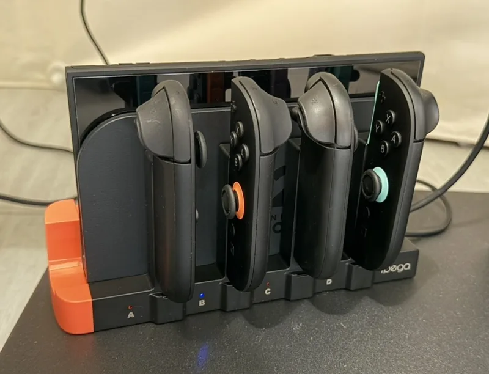
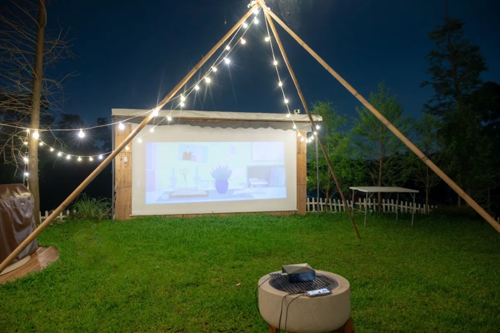
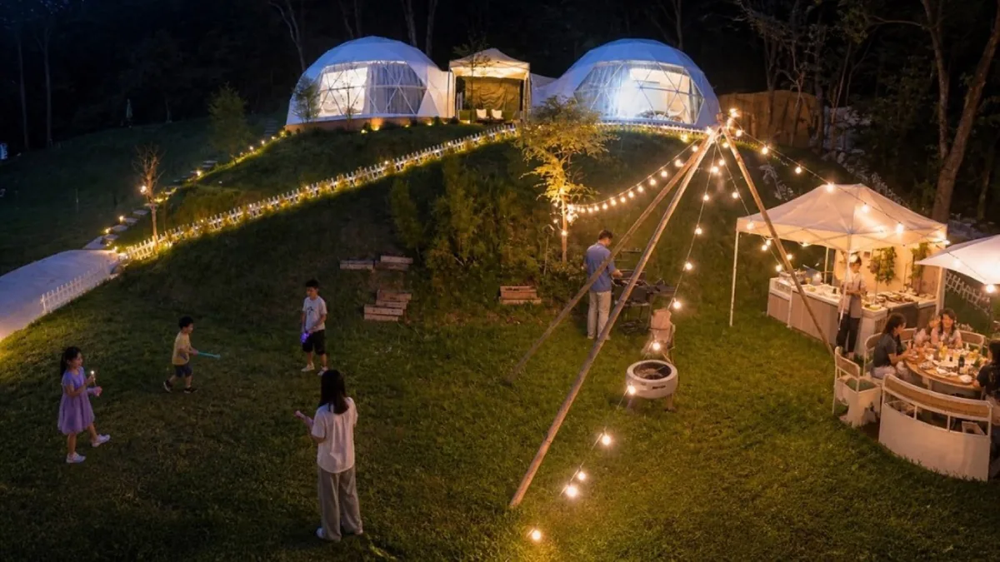
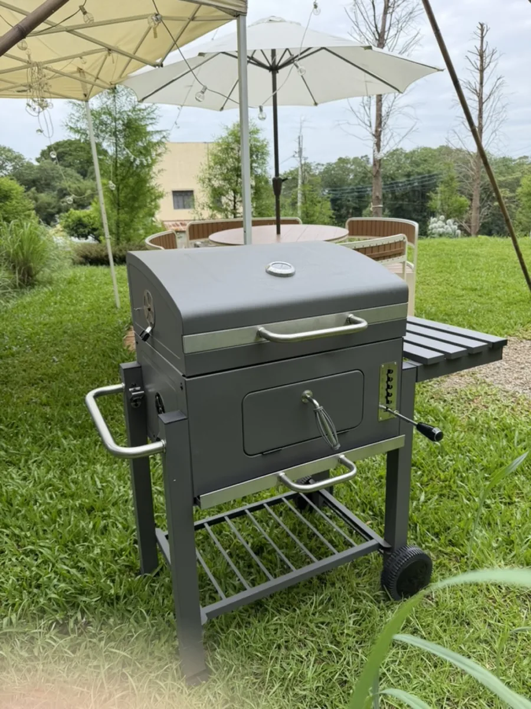
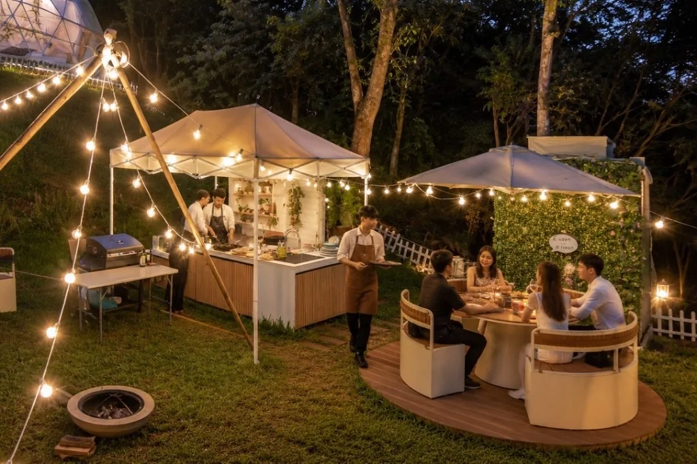

NT$10,800
週一至週四非國定假日適用。
Joyforest 揪好森｜森林活動包場｜預約制
Joyforest 位於桃園楊梅，從兩三位好友的小聚，到 20 人內的生日、抓周、求婚、毛孩派對與家庭聚會，都能自在享用冷氣室內活動空間與兩片森林草地。
想唱歌、玩 Switch、打電動麻將、一起下廚，或在草地看戶外電影都可以。另一處室內空間也會貼心保留，方便大家暫放活動物品。
週一至週四（非國定假日）NT$10,800；週五至週日及國定假日 NT$13,800。歡樂時光從 15:00 延續到 24:00，20 人內都歡迎；停車空間可安排 6 台一般自小客車。
20 人內都很適合的森林系包場活動。熱氣球冷氣室內活動空間可唱歌、玩遊戲與聚餐；兩片草地都能料理、聚會、拍照、舉辦儀式與看戶外電影。
熱氣球冷氣室內活動空間提供 Switch 多人遊戲、電視與 Apple TV、卡拉 OK 與雙麥克風、電動麻將桌；兩片草地都有戶外廚房與戶外電影，一群人從白天玩到夜晚都不無聊。
活動包場價格
週一至週四非國定假日適用。
週五、週六、週日及國定假日適用。
活動設備
以下為常用設備與玩法；實際提供內容依預約區域、活動規模、天候與方案確認。

四支控制器可一起玩賽車、派對、節奏與多人遊戲；遊戲清單以現場主機顯示為準。
Apple Music 搭配 JBL PartyBox 與麥克風，電視同步歌詞，適合慶生與親子同樂。

夜晚可依方案安排戶外投影與草地觀影；雨天或強風時會調整使用方式。

燈串亮起後，草地很適合散步、玩遊戲、拍照與慢慢聊天，把聚會的快樂一路延續到夜晚。

可安排烤肉、火鍋與戶外聚餐；食材、燃料、耗材及使用方式請在預約時確認。

備有冰箱、微波爐、卡式爐、基本鍋具與餐具，可自備餐食或安排聚餐活動。
不論想辦哪一種聚會，都能用一套簡單方案，開心享用室內外空間與豐富設備。
在森林包圍的桃園生日派對場地裡，舉辦屬於你們的慶生派對。適合小孩生日、大人慶生、家庭聚會與朋友小型包場，可安排蛋糕、餐食、唱歌、遊戲與戶外電影。
適合抓周、週歲派對、寶寶生日與家庭聚會。室內可安排儀式與用餐，戶外可拍家庭合照與親子互動。
寵物友善草地與室內冷氣空間，適合毛孩生日、狗狗聚會、寵物家庭日與主人朋友聚餐。
森林中的私密桃園求婚場地，適合安排驚喜求婚、紀念日佈置、影片播放與親友見證。草地、室內活動空間與夜間燈光能營造自然又有故事感的氣氛。
很適合 20 位以內的小型森林婚禮。兩片草地可安排證婚與聚餐，冷氣室內活動空間也能舒服宴客，另一處室內空間可貼心保留作為活動置物區。
適合品牌聚會、課程活動、親子工作坊、生活風格活動與小型企業聚會。室內可講座簡報，戶外可體驗活動與拍照。
關鍵字｜桃園派對場地、桃園派對包場、桃園小型派對場地、桃園生日派對場地、生日派對場地桃園、桃園求婚場地、桃園抓周場地、桃園寵物派對場地、桃園森林派對場地、桃園森林活動場地、桃園楊梅包場、森林系派對場地
#桃園派對場地 #桃園派對包場 #桃園生日派對場地 #生日派對場地桃園 #桃園小型派對場地 #桃園求婚場地 #桃園抓周場地 #桃園寵物派對場地 #桃園森林派對場地 #桃園楊梅包場 #森林系派對場地 #Joyforest揪好森